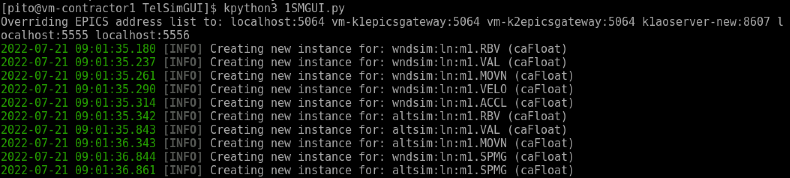
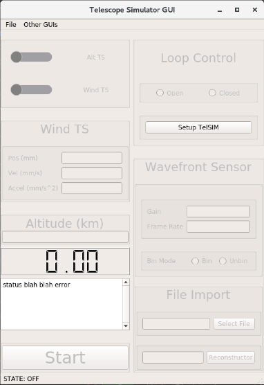
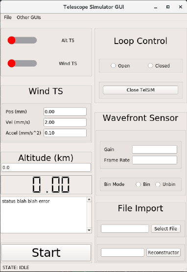
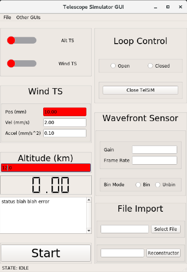
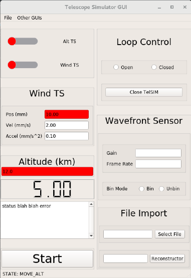
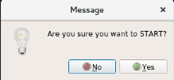
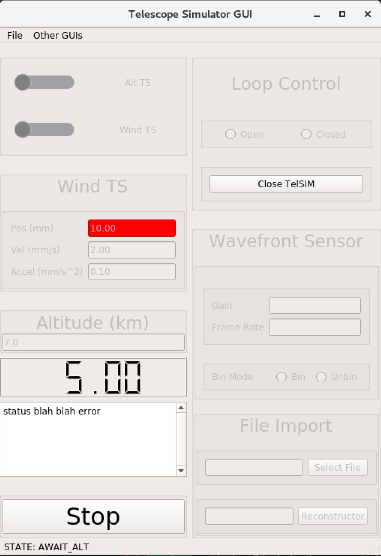
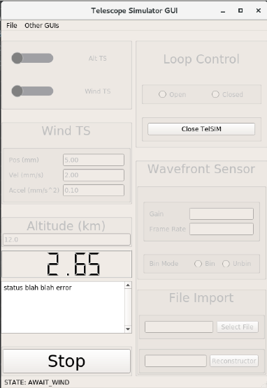
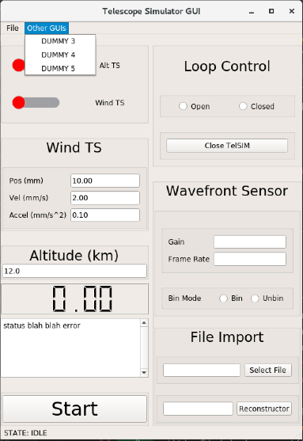

TelSIM GUI User Manual
Author: Preston Ito
Last updated: 21 July 2022
Opening GUI
!To-do Note: Figure out how to make it executable anywhere. Then change this part. While in the directory
/usr/local/home/pito/kroot/src/kss/ao/tsim/TelSimGUI
run the following command:
kpython3 1SMGUI.py

Workflow
- The user will open the GUI from within their VNC
- Enable GUI and startup telescope simulator with the 'Setup TelSIM' button
- The user will change any desired parameters:
- Wind TS: position, velocity, acceleration
- Alt TS: position
- Loop Control: open/closed
- TS Connections: on/off
- Binned Mode: bin/unbinned
- Import File: The user can choose to import a .txt file to auto run different tests
- Once the user has finished changing everything they want, start running the test with 'Start' button. When the 'Start' button is pressed initially, the timer will change to display the (rough) time it will take for the Wind TS to get to its position, but nothing will start until the user verifies the start from a popup. Once the start is verified, the alt TS will move to its desired position. After it reaches its destination, only then will the wind TS and timer start. Note: The timer doesn't run for the Alt TS, only for the Wind TS.
- If the test needs to be stopped in the middle of a test, stop all movement with the 'Stop' button
- To open other GUI's, hit the 'Other GUIs' dropdown in the top menu and select desired GUI. Note: Might need to do ssh-keygen to authenticate account with GUI permissions
- Once the user is done, hit the 'Close TelSIM' button to disable GUI and "home" the positions of the two translation stages
States
Off

When first opening the GUI, it will look like this. All of the editable widgets will be disabled, with the exception of the 'Start TelSIM' button. This button is the only way to enable everything upon startup.
Idle

Editing

Prestart
  Once the user is ready to run the test, they can hit the 'Start' button. This will trigger two things: It will popup a dialog window that asks the user to verify starting and will also calculate the amount of time it will take to move the wind TS and display it on the timer. The stage won't start until the user verfies the start from the dialog.
Altitude Moving

Wind Moving

Other GUIs
